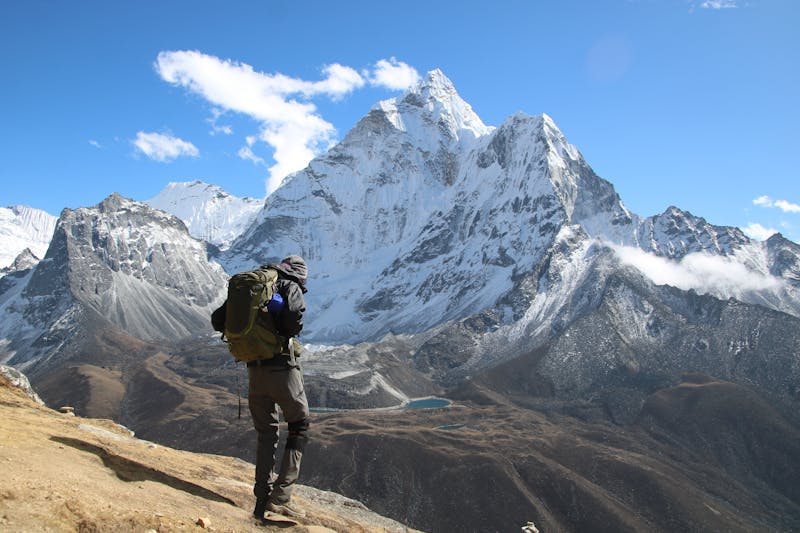
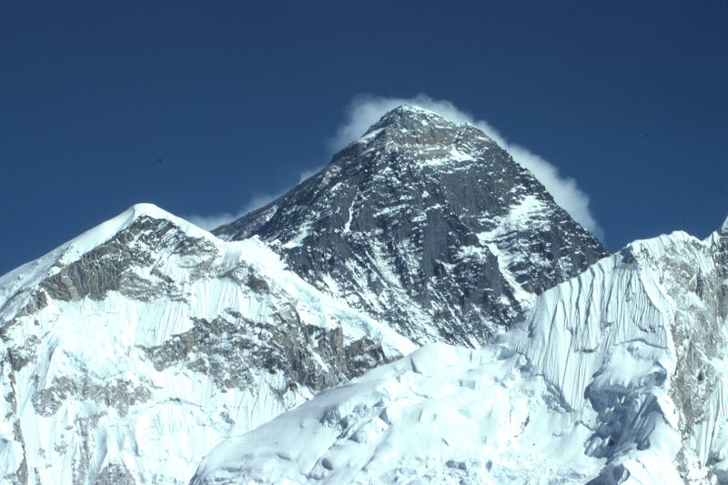
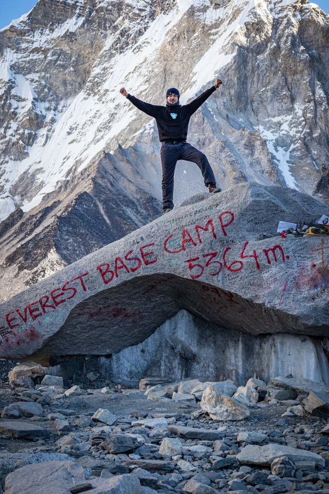
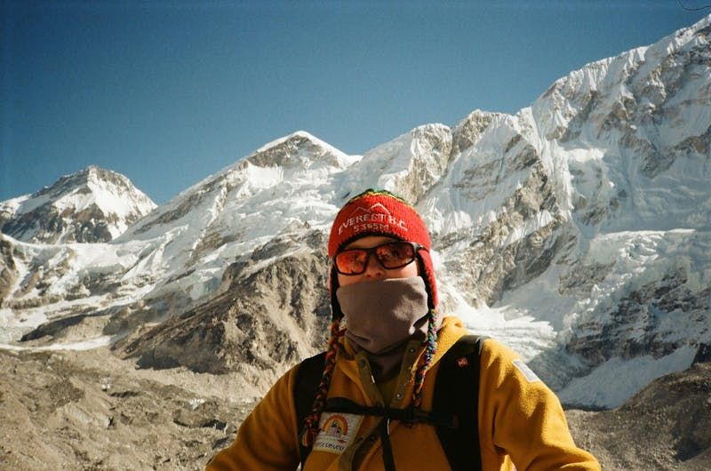
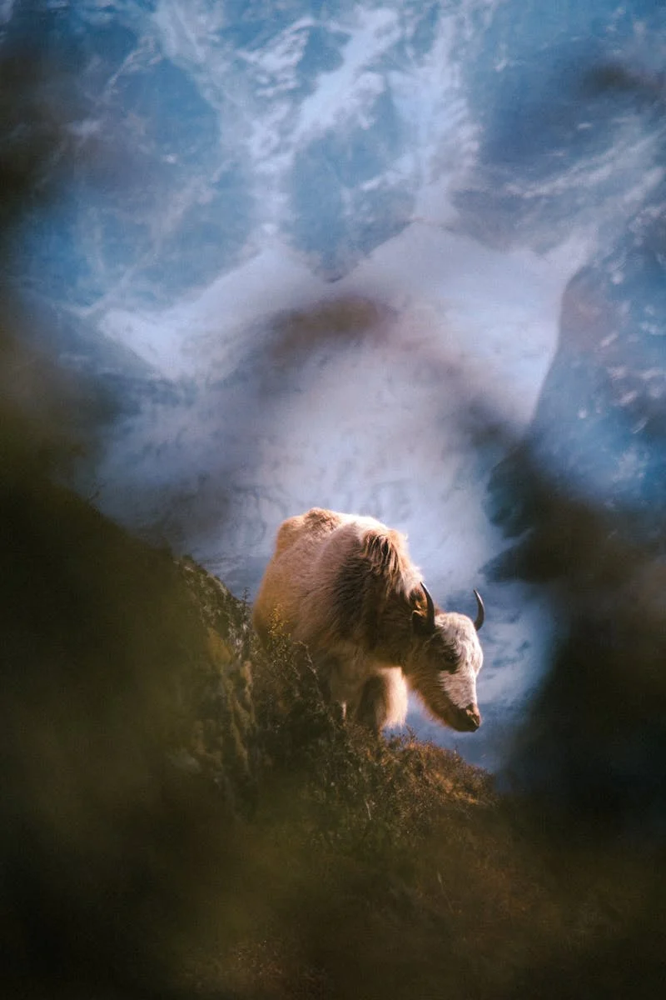

Header Logo
header link one
header link two
header link three
This website is awesome
This website has some subtext. This article has provided a brief summary of all the layout technologies you should know about at this point in your learning! Read on for more information on each individual technology. Next up, we'll look at floats.
Sign up

Information

Everest is full of beautiful mountainranges where you can see picturesque views of snowy white cliffs with billowing clouds hovering over the peaks.

Base camp sits at an altitude of 5,364 metres above sea level and is a place where many strive to hike to.

Many hikers endure a 21 day hike starting from a flight from Kathamandu to a village called Lukla where they begin their ascent to the mountain camp.

Along the trail, lots of wildlife can be seen including animals such as yaks, eagles, hawks as well as household dogs and cats.
"People do not decide to become extraordinary. They decide to accomplish extraordinary things"
Sir Edmund Hillary
test